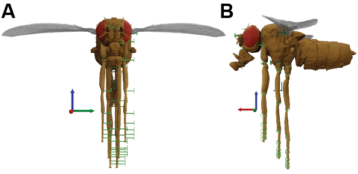

3D pose alignment#
Why do we calculate joint angles?#
The computation of joint angles could serve two primary purposes:
Alignment process#
We first map and align the experimentally acquired 3D poses with a biomechanical model’s body NeuroMechFly. The alignment process consists of two stages. At the initial stage, we calculate the distances between specific body landmarks to derive the scaling constant to magnify or reduce the size of the experimental 3D data to match the body proportions of the biomechanical model (shown in biomech-model).
The key points used for scaling the front legs and antennal kinematics are:
The leg markers for each leg, e.g., Thorax-Coxa, Coxa-Femur, Femur-Tibia, Tibia-Tarsus, Claw.
The base and tip of the antenna for the antenna on each side.
The mid-wing hinge joints and the mid-antennae for the head.
This process yields one scaling factor for each leg, one for each antenna, and one for the head. We then multiply each scaling factor with the corresponding limb, allowing us to match the task space of the real animal with the biomechanical model. Note that, instead of scaling each leg segment (e.g., Femur leg segment) individually as done in [LRRO+22], which could then cause deviations from the real animal joint poses, we scale the entire leg.
The second stage involves translating the positions of ‘fixed’ joints (e.g., Thorax-Coxa, Base Antenna joints) to their respective locations on the biomechanical model.
Note
Note that the Alignment class expects the 3D position in a specific data format. Additionally, the axes of the 3D data should be as the following:
x-axis: anterior-posterior axis of the animal (+x: anterior, -x: posterior)
y-axis: lateral axis of the animal (+y: left, -y: right in fly-centric coordinates)
z-axis: dorsoventral axis of the animal (+z: dorsal, -z: ventral)
If the data provided does not follow the above orientation, the user should rotate the data to match the required orientation.
Advantages of the alignment process#
Ultimately, this process has a twofold aim:
Abolishing the noise originating from ‘fixed’ jittery key points
Minimizing the variations in the leg size induced by the triangulation process.